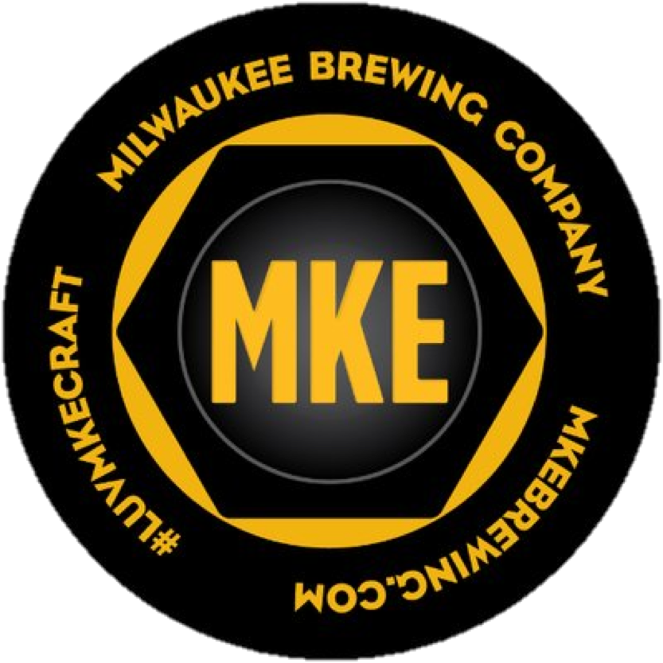

A collaboration with Milwaukee’s own Rishi Tea, this IPA is infused with Organic Jasmine Tea, lending it a sweet, floral aroma. Strong citrus notes come from the generous amount of American hops. Hop Freak was born big and bitter but a sizeable malt bill adds balance to this beast.